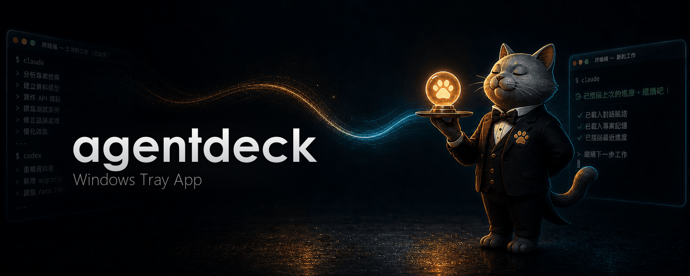
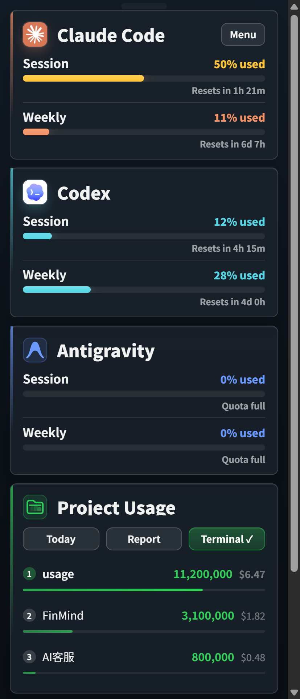

Pin your Claude Code & Codex quota to the Windows tray.
A small Windows tray app that shows how much of your AI quota is left — like a battery percentage for tokens. Reads your local files directly — never phones home to Anthropic or OpenAI.
Reads your local files — never connects to Anthropic or OpenAI
Local-only — reads files on your disk
No telemetry, no accounts, no cloud
Built for developers who burn tokens.
Stop guessing if you're about to hit the rate limit mid-refactor.
5-hour & 7-day quota at a glance
Both Claude Code session (5h) and weekly (7d) percentages live in the tray. Click for a full panel with per-project usage and cost.
Claude Code + Codex, one app
Track Anthropic and OpenAI quota side by side. Codex auto-detected from ~/.codex/sessions/ with no setup.
Local-only by design
Reads a status file written by an installed statusLine hook + Codex session JSONL logs. Never connects to Anthropic or OpenAI to check usage. Doesn't touch your Keychain.
One-click HTML reports
Today, week, month, or all-time — get a shareable HTML report with token / cost trends, top projects, and model breakdown. Project names hide by default for client-safe sharing.
10 visual panel themes
Matrix digital rain, Windows 95, retro newspaper, midnight aquarium, World Cup FIFA HUD, Lepidoptera blueprint — pick a mood for your tray pop-out.
Bilingual interface
Auto-detects your Windows display language. 繁體中文 and English — every string translated, not just menus.
AI Talent Market
Install a curated team of Claude Code subagent personas — a one-person law practice, a solo software studio, and more — straight into ~/.claude/agents/, then call one by name in your next conversation.
Terse Mode
A menu-bar toggle that asks Claude Code — and Codex CLI too, if it's installed — to answer more tersely for the whole session: same substance, fewer words, while code, commands, and error messages stay byte-exact.
Summon Spirits
An optional menu-bar critter — phoenix for Claude, dragon for Codex — that speeds up as your local token burn climbs, so you can feel your pace at a glance without reading a single number.
Notifications before you hit the wall
When your context window hits 70%, the status line nudges you to /clear or /compact to prevent token waste. You can also opt-in to system notifications for quota limits and recoveries.
TUI & CLI
Love the terminal? Run the rich TUI dashboard with python3 main.py --tui, or generate deep analytics with python3 usage_cli.py report.
Hide Sections
Only use one tool? Hide the Claude Code or Codex section from the tray and panels completely with a single click.
AI Council
Run a multi-round discussion between Claude Code, Codex, and Antigravity on one topic. Pick who joins, which model each one uses, and how many rounds — with a token estimate shown before you start.
PROGRESS CONCIERGE
Now your CLI picks up where you left off
The web and desktop apps keep your history — close them, reopen, it's all there. The CLI didn't. Resume hands that power to the CLI: open a new session and it picks up where you left off automatically, no re-explaining. It now also runs a daily health check on your logs — when it spots token waste, the handoff adds a one-line heads-up; say "show me" for the findings and fixes. Reads local files only — never connects to any API.

Auto-resumes your last progress
Daily health check flags token waste
Reads local files only
One menu toggle (off by default)
Install in 10 seconds.
Two ways to get it running. Both free, both AGPL-3.0.
RECOMMENDED
Download and run
Grab agentdeck-windows.zip from Releases, unzip anywhere, run agentdeck.exe. No installer.
Python 3.13 and uv. See the development docs for the full setup.
uv sync --frozen --group dev --extra windows
uv run python main.py
Pick a panel that fits your mood.
Ten built-in themes. Change anytime from the panel toolbar.
matrix
win95
newspaper
cloud_observation
aquarium
prism_arcade
black_hole
world_cup
lepidoptera

classic
Your AI usage, in one shareable page.
Generate an HTML report with token spend, cost, top projects, and model distribution — plus an AI Tool Update Digest summarizing recent changes, and a year-in-review page with a GitHub-style contribution heatmap and a "Wrapped" card. Send to your manager. Use as a client invoice attachment. Project names hide by default.
 matrix
matrix win95
win95 newspaper
newspaper cloud_observation
cloud_observation aquarium
aquarium prism_arcade
prism_arcade black_hole
black_hole world_cup
world_cup lepidoptera
lepidoptera